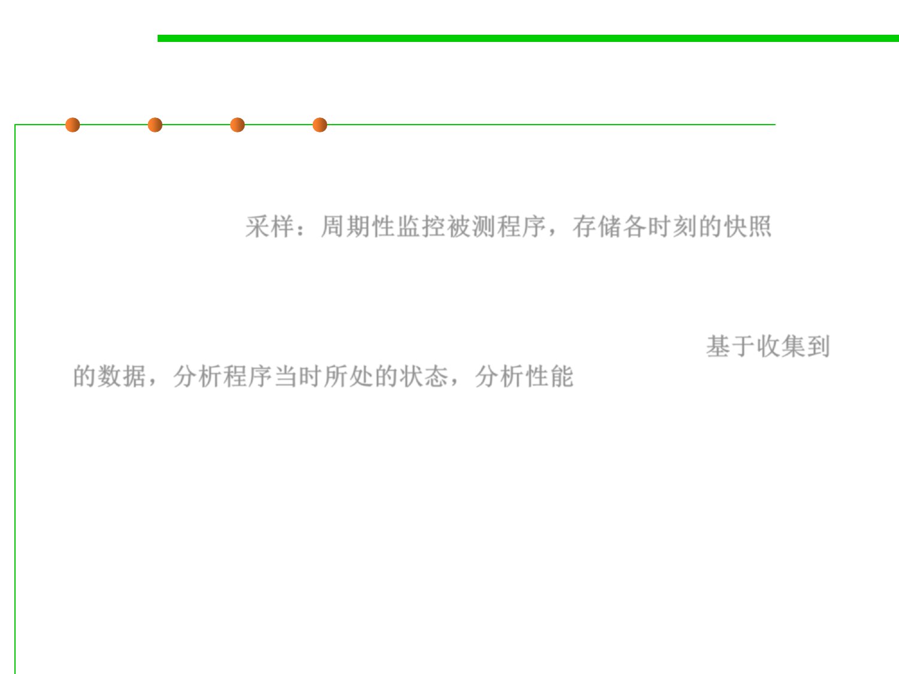

(2) Sampling 采样
8.2 Dynamic Program Analysis Methods and Tools
▪ In sampling, the processor or VM is monitored and at regular
intervals an interrupt executes and saves a “snapshot” of the
processor state 采样：周期性监控被测程序，存储各时刻的快照
▪ This data is then compared with the program’s layout in memory
to get an idea of where the program was at each sample 基于收集到
的数据，分析程序当时所处的状态，分析性能